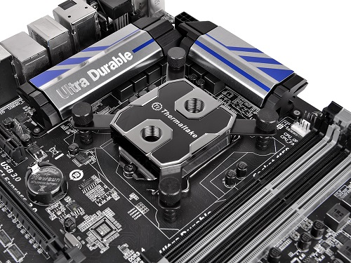
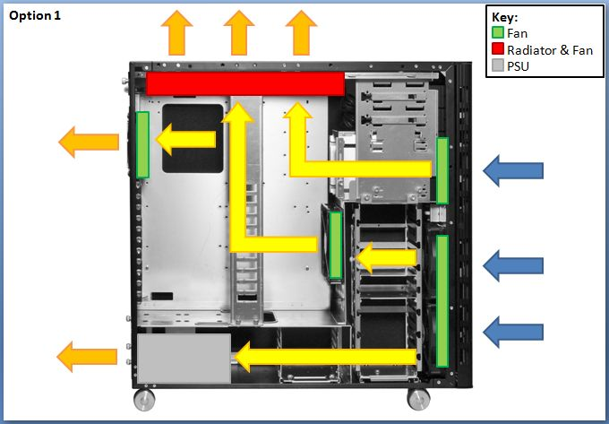
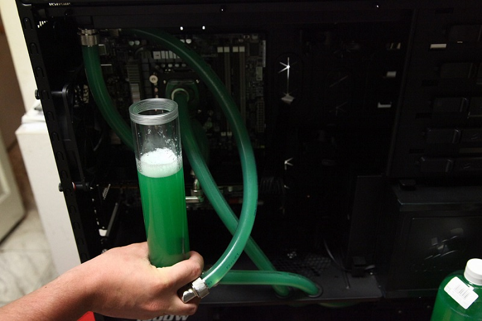
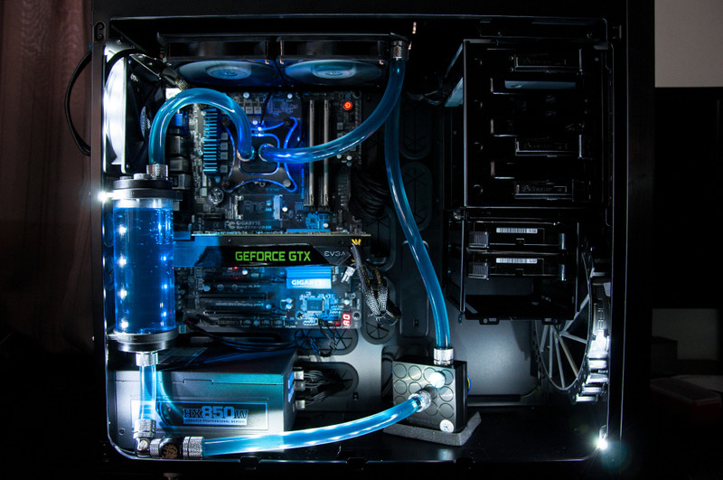

1. Plan it
Decide first what kind of Water Cooling would you like to have (Traditional or an AIO).
Once decided, before buying any generic water cooling kit online or at a store, make sure you do a little bit of research. Water Cooling is very complex and has different kind of ways of building a water loop system. One may consider different other factors such as the PC specifications, PC case size and many more.
Consider your style, different manufacturers offer different styles. You do not want to change your loop often so choose wisely. Factors to consider are Color tubings, Hard Pipe or Soft Pipes, Reservoir style, Water block style and many more.
2. Know the parts
Different manufacturers has different set of parts for their kits, make sure to identify the basic components first such as the water blocks, tubings, pump and radiator.
If some parts are unidentified make sure to read the manufacturers manual or do a little bit more research about them.
3. Start building
Start by measuring each components if they really fit with your hardware at the same time start measuring you tubings and fittings if they are really compatible.
---Install the water blocks that the manufacturer provided for your system.
---Install the radiator, make sure it does not contradict the air flow of your current system.
---Install the pump to the desired place you want.
---Install also the reservoir if the manufacturer provided it.
---Install the tubings and fittings afterwards.
4. Fill and Test
---Some kit do not have a reservoir but if you do, start filling up the reservoir with water. If reservoir is not found, another method is to fill water directly to the pipe that is attached before the pump.
---There are different kinds of coolant available in the market but the most cheap and most common is distilled water.
---Do not fill it up 100% to prevent overspilling and back splash.
---Keep repeating this process until all tubes and water blocks are filled up with water.
---Once done, just keep the pump on and let the whole loop go for 24 hours and check for some leakage.
---After the 24 hour test and if successful, start running your Computer and check the temperatures and do some benchmarkings.
---If successful start using your PC the way you like it.
5. Enjoy your new system!
You have successfully installed a water cooling system unto your PC. Enjoy the benefits, and start overclocking to improve your PC's performance.
